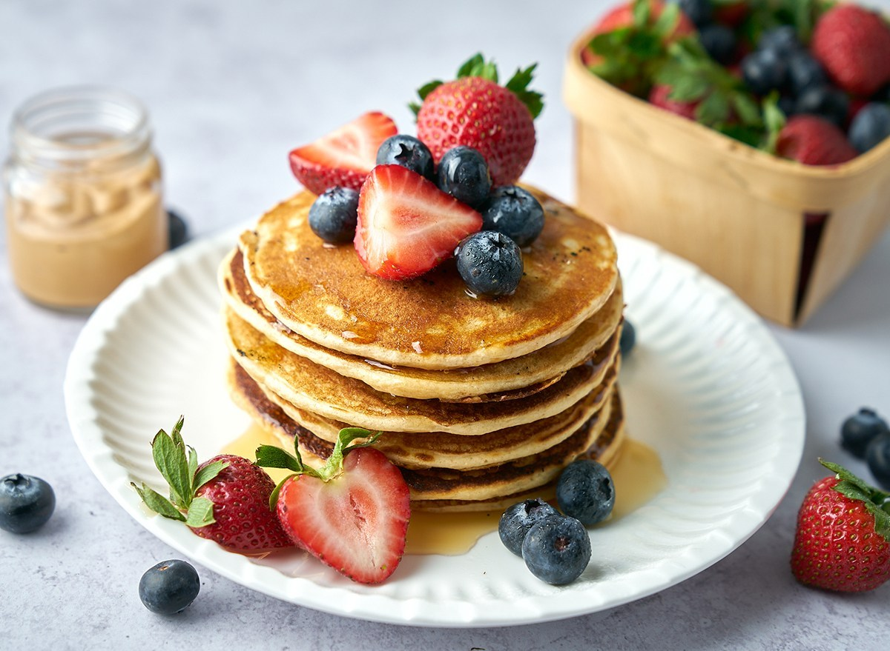
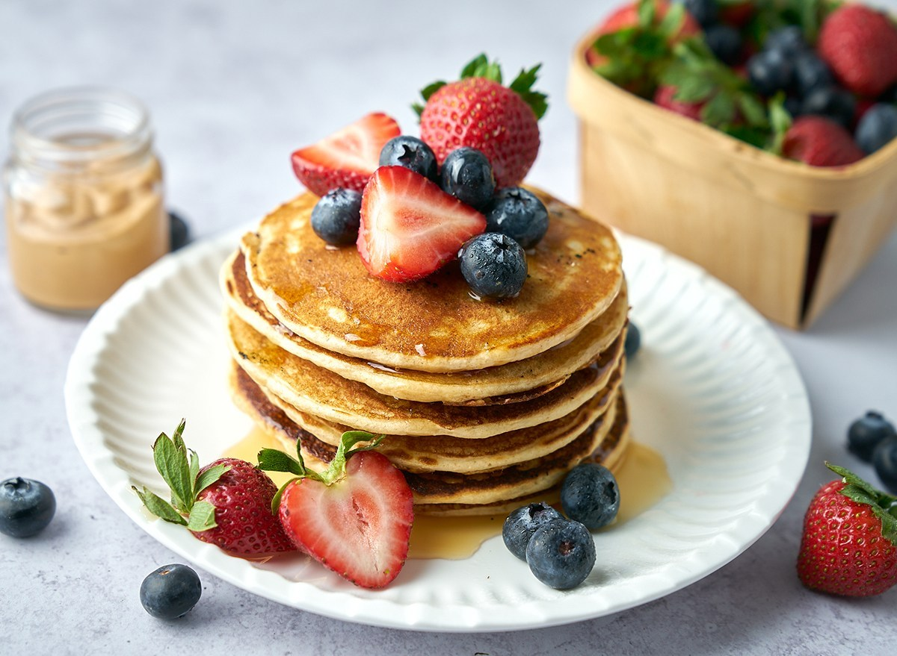

About Us
Donec pede justo, fringilla vel, aliquet nec,
vulputate eget, arcu. In enim justo, rhoncus ut,
imperdiet a, venenatis vitae, justo. Nullam dictum
felis eu pede mollis pretium. Integer tincidunt.
Cras dapibus. Vivamus elementum semper nisi.
Aenean vulputate eleifend tellus.


 
